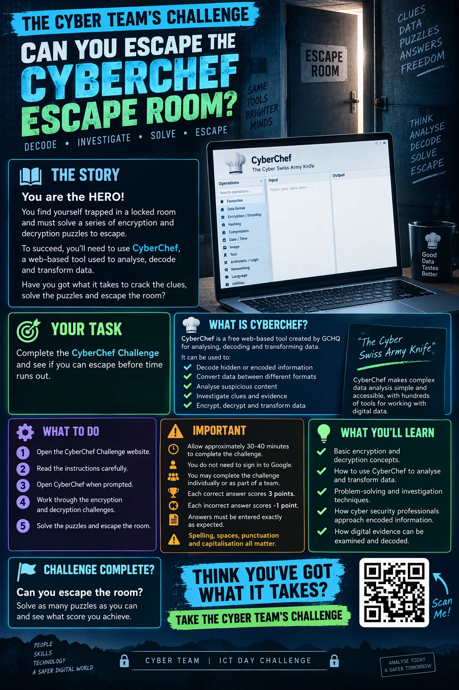

▤ The story
You are the HERO!
You find yourself trapped in a locked room. Solve a trail of encoded clues and encryption puzzles to escape. Your toolkit is CyberChef.
A locked room. A trail of encoded clues. Your toolkit is CyberChef. Decode the evidence, connect the dots and unlock your next move.
No sign-up. Learn at your own pace. Progress stays on this device.

> connection establishedSix rooms. One way out.
> evidence recovered
> 01001101 01000001 01010100
> awaiting analyst input
Every mission uses CyberChef. Hints are free. Revised missions require a fresh solve; other saved completions stay.
You find yourself trapped in a locked room. Solve a trail of encoded clues and encryption puzzles to escape. Your toolkit is CyberChef.
Complete the six-room escape journey, then take on 29 bonus missions. Play individually or work together as a team.
A free tool from GCHQ for analysing, decoding and transforming data. Build a recipe, add your evidence and investigate the output.
Open your toolkit ↗Allow roughly 30–40 minutes for the original journey. There is no enforced timer. Hints are free; incorrect answers do not lose points.
No sign-up needed. Progress is saved on this device.
Start with the original journey, or jump into a skill you want to practise.
Five visual briefings from the Cyber Team. Open a poster to explore it, or download a copy.
These are the supplied original posters; printed event labels and escape-room rules may differ from this website. The CyberChef demonstration poster includes its worked answer.


Follow the evidence and uncover the hidden message.
View full size ↗ · Download


Recognise suspicious messages and misleading links.
View full size ↗ · Download